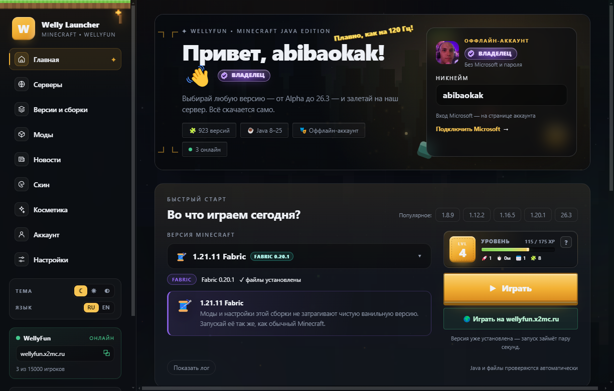
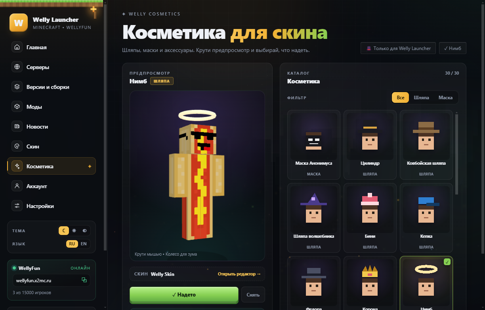
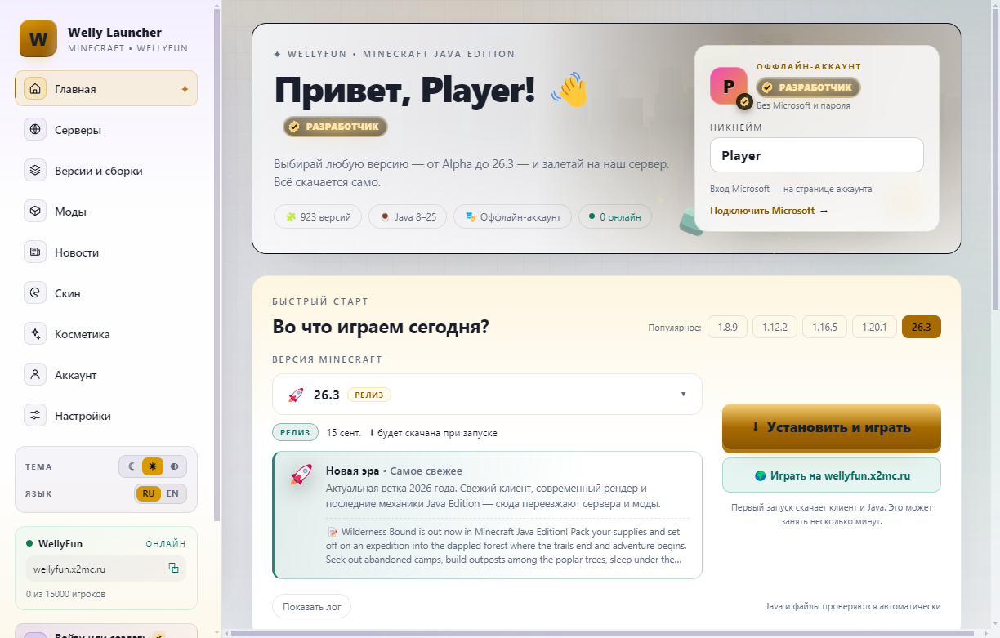
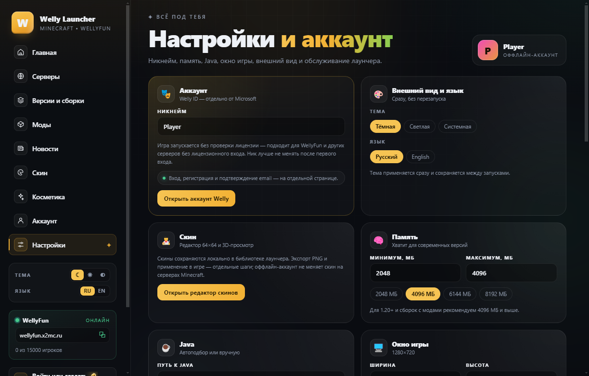

923 версий
От Alpha до 26.3. Выбирай любую — лаунчер сам скачает клиент, библиотеки и ассеты.
Всё уже внутри
Один лаунчер вместо десяти программ, инструкций и поисков нужной Java. Три темы, два языка, скины в 3D с косметикой, вход через Microsoft и аккаунт Welly ID с аватаркой — рядом с кнопкой «Играть».
От Alpha до 26.3. Выбирай любую — лаунчер сам скачает клиент, библиотеки и ассеты.
Подходящая Java 8–25 находится и скачивается автоматически. Никаких настроек.
Лицензионный вход в окне Microsoft: официальный ник, UUID и скин. Пароль вводится только на сайте Microsoft.
CustomSkinLoader ставится сам: скин виден в одиночной игре и на серверах с online-mode=false.
Отдельный аккаунт лаунчера, не Microsoft. Работает сразу — без сторонних серверов. Аватарка, генератор паролей и роли с цветными галочками.
Шляпы, маски и ушки для скина с 3D-предпросмотром. Видно только пользователям Welly Launcher.
Редактор 64×64 со слоями Steve и Alex, импортом и экспортом PNG и библиотекой скинов.
Тёмная, светлая или системная тема. Русский и английский переключаются без перезапуска.
Fabric, Quilt, Forge, NeoForge и OptiFine — версия Minecraft и загрузчик в один клик. Каждая сборка запускается отдельно.
Перед запуском Minecraft лаунчер сворачивается и сам возвращается, когда игра закрывается.
«Играть на сервере» запускает Minecraft, подключает к wellyfun.x2mc.ru и убирает лаунчер с экрана.
Онлайн сервера, свежие новости и описания версий прямо на главной лаунчера.
Ставится в Program Files, ярлыки на рабочем столе и в меню «Пуск». Есть и portable-версия.
Оффлайн-профиль: ввёл ник — и играешь. Пароль от Microsoft не нужен.
Версия 1.0.12
Discord теперь под рукой, обновление ставится одной кнопкой, а версия на сайте и в лаунчере наконец совпадает. Всё остальное тоже на месте.

СообществоКнопка WellyFun в Discord закреплена в сайдбаре и на главной рядом с сервером. Ссылка также есть в шапке и футере сайта.
Место декоративного HUD занял настоящий уровень. Он растёт за реальные действия: входы, запуски и время в игре.

Косметика30 шляп и масок с пиксельными иконками. Предпросмотр строится из активного скина через 3D, а не из блочной заглушки.

ДизайнГлавная избавлена от лишних элементов: карточки выровнены по сетке, отступы ровные, а объяснение уровней открывается в центрированном окне.
 Загрузчики
Загрузчики
Выбери версию Minecraft — в панели появятся кнопки Fabric, Quilt, Forge, NeoForge и OptiFine с рекомендуемой и другими сборками.
Тема применяется сразу и запоминается между запусками — без вспышки белого экрана при старте.

ПоведениеПри запуске Minecraft окно сворачивается в панель задач и возвращается, когда игра закрывается.
Дальше
WellyFun ждёт
Скачай лаунчер, придумай ник и окажись в игре через пару минут.